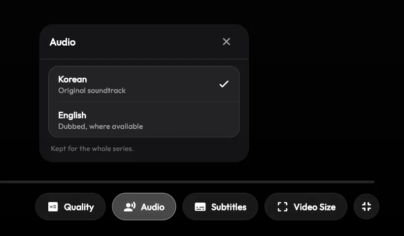
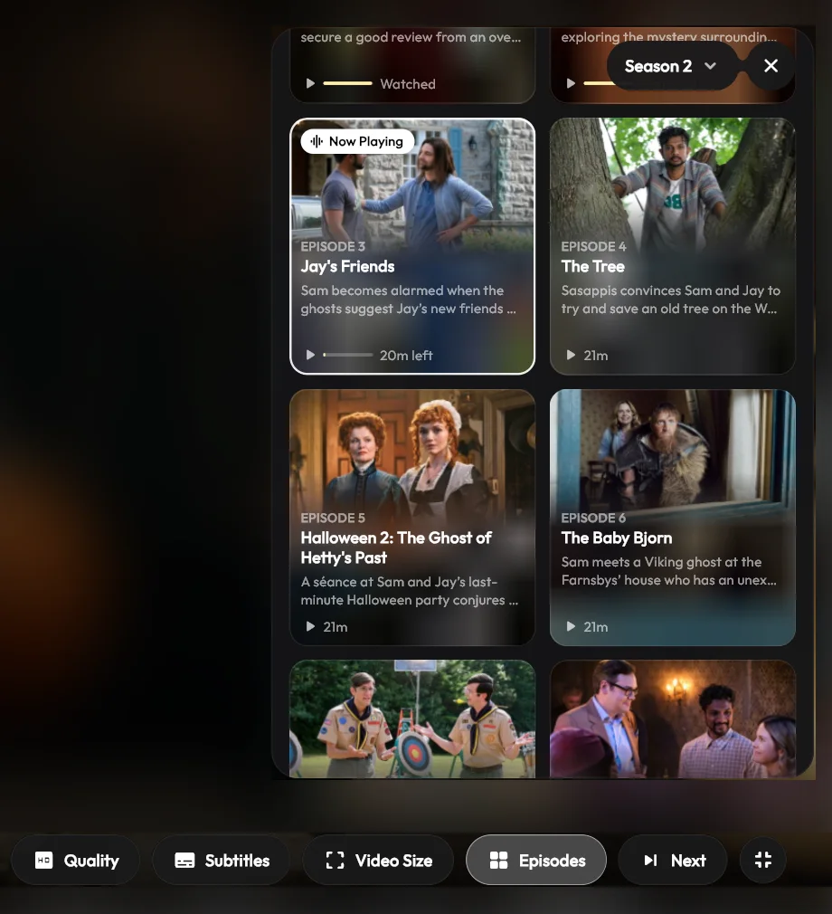

Made for watching, not for setting up.
Open Popcorn, pick something and press play. Everything below is already built in. No sign-up, no ads, no add-ons to find.

Press play, and it starts
While you read about a film, Popcorn gets a head start on it, so it begins almost as soon as you press play.
- Choose 4K, 1080p, 720p or 480p, each with its size, and the best balance marked Recommended.
- Change quality halfway through. It carries on from the same moment.
- If a stream stalls, Popcorn finds another copy and keeps going.
- Pick up where you left off, on any film or episode.

Ask for something to watch
Not sure what you want? Say it the way you'd say it to a friend, like a feel-good film for a rainy Sunday, and Ask comes back with posters to choose from.
- Ask follow-up questions to narrow it down.
- Ask for what's on Netflix, Prime Video or Disney+ in your country.
- Write in your own language and it answers in it.
- No spoilers, unless you ask for them.

Subtitles that keep time
Popcorn finds subtitles in your language and puts the ones made for your copy first. If they're out of time, it listens for when people speak and moves every line to match.
- Sinhala subtitles, translated from English as you watch and kept for next time.
- Adjust the timing yourself if you like. Popcorn remembers it.
- Your choice of language becomes the default for everything after.

In the language it was made in
A Korean film plays in Korean, a Spanish series in Spanish. If you'd rather hear English, choose it where a dubbed version exists, and Popcorn keeps to it for the whole series.
It never switches the language by itself.

Made for series
Binge without reaching for the remote.
- Skip Intro, Skip Recap and Skip Credits buttons, where the episode has them marked.
- The next episode plays by itself, into the next season too.
- Every episode in the player, with how much you have left.

Find it, then watch it anywhere
What's trending this week, the top 10 in Search, cast pages, trailers, My List and Continue Watching.
And if a film is on Netflix, Prime Video, Disney+ or another service where you live, its logo is right by Play: one tap opens it in that app.

On your phone
- Swipe for volume and brightness, double-tap to skip 10 seconds, hold for double speed.
- Play and pause from the lock screen.
- The picture turns whichever way you hold the phone.
- Films still in cinemas show the day they come out.


And the rest
- Cinema sound
- 5.1 and 7.1 soundtracks go out as they are, for Dolby Atmos, spatial audio or Windows Sonic where you have it. On ordinary speakers, nothing's lost, bass included.
- On a PC
- Real full screen, keyboard shortcuts for everything, and smooth scrolling with the mouse. Films are kept on the drive Popcorn is installed on, not on C:.
- On a TV
- Android TV, Google TV and Fire TV, driven by the remote. How to install it
- Backup
- Save My List and what you've watched to a file, and bring it back on another phone or PC.
- Updates itself
- New versions install from inside the app. Nothing to look for.
- No account
- No sign-up and no ads. Your list and history stay on your device.
- Free
- All of it. No subscription, no paid extras.